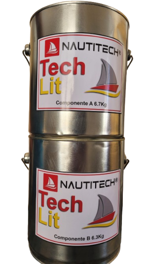

PRODUTOS
-
NAUTITECH EPOXINAUTI 900g
A NAUTITECH EPOXINAUTI 900g consiste em dois componentes: Componente A (500g) que é a resina e Componente B (400g) que é o endurecedor totalizando 900g. Para garantir o funcionamento correto do produto, é essencial misturar os dois componentes em proporções iguais por volume até que a mistura fique homogênea. Após isso, aplique o produto na superfície desejada e aguarde 24 horas para que a cola fique completamente rígida.
NAUTITECH TECHLIT 13Kg
A NAUTITECH TECHLIT 13Kg consiste em dois componentes: Componente A (6.7Kg) que é a resina e Componente B (6.3Kg) que é o endurecedor totalizando 13Kg. Para garantir o funcionamento correto do produto, é essencial misturar os dois componentes em proporções iguais por volume até que a mistura fique homogênea. Após isso, aplique o produto na superfície desejada e aguarde 24 horas para que a cola fique completamente rígida.